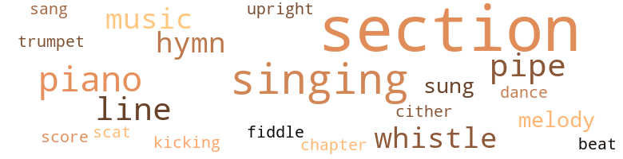
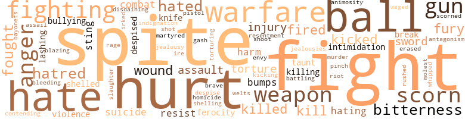
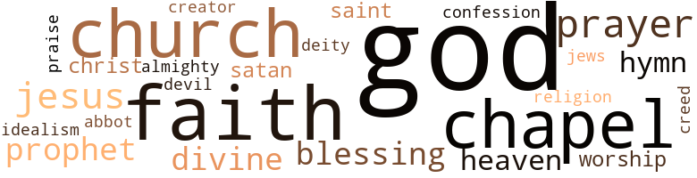

Right to Live (The), by Ward, Thomas Playfair (1953)
79 music-related terms matched in this text.
Most frequent terms in this topic: section (27); singing (9); piano (6); pipe (5); line (5)
chapter.n.01
Definition: a subdivision of a written work; usually numbered and titled
| word | sentence |
|---|---|
| chapter | Another chapter had been written , Samuel felt , in the book of his own life , as well as in the history of the Academy . |
cornet.n.01
Definition: a brass musical instrument with a brilliant tone; has a narrow tube and a flared bell and is played by means of valves
| word | sentence |
|---|---|
| trumpet | It was as if a voice from heaven had blazed forth in trumpet sound , saying to him , " It must be done , " and " Thou art the man . " |
dance.n.01
Definition: an artistic form of nonverbal communication
| word | sentence |
|---|---|
| dance | Mrs. Wiley , who presided at the piano , looked as fresh as a daisy , and her fingers ran up and down the keyboard with the grace of a fairy dance in the moonlight , Sammy thought . |
hymn.n.01
Definition: a song of praise (to God or to a saint or to a nation)
| word | sentence |
|---|---|
| hymns | The comely Evanah entertained him by playing the piano and singing old hymns used in the Sunday school at Bethle - hem , where she acted as organist . |
| hymn | From somewhere deep down within his heart , the words of the familiar hymn rose to the surface and re-echoed through his thoughts : " Spirit of God , descend upon my heart ; wean it from earth - through all its pulses move . |
| hymns | So " Founder 's Day " is always held at the school on Feb. 12 , at which time ap - propriate hymns are sung , and prayers of thanksgiving are sent up to the " Giver of every good and perfect gift " for sending forth these two great souls that caught a vision of a great human need , and like the " Man of Galilee " who spent his life " going about doing good , " they threw themselves unreservedly into the channel of that need . |
| hymns | It would usually be " Work For The Night Is Coming " or " When The Mists Are Cleared Away " or some other of the old hymns . |
kick.v.04
Definition: kick a leg up
| word | sentence |
|---|---|
| kicking | Well , at any rate , since he could not tell her what he thought of it , under the circumstances , at least he could have the satisfaction of taking the spite out of these little rocks by kicking his feet against them . |
music.n.01
Definition: an artistic form of auditory communication incorporating instrumental or vocal tones in a structured and continuous manner
| word | sentence |
|---|---|
| music | It was a lot of fun buying treats and trinkets for the girls and have them admire your generosity and listen to the music of the coins in your pockets . |
| music | ( He always led the singing , waving the baton up and down and to both sides , keeping time with the music , as Mrs. Wiley played the piano . ) |
| music | Waving the baton with every beat of the music , his deep baritone voice would ring with the fullness of the melody as it rose through the air . |
| music | While the other children were marching up , keeping steady steps with the music as Mrs. Wiley played the piano , Sam - uel would come to the stairway and stop . |
piano.n.01
Definition: a keyboard instrument that is played by depressing keys that cause hammers to strike tuned strings and produce sounds
| word | sentence |
|---|---|
| piano | Every time it looked as if the principal would bring his talk to a close and signal for Mrs. Wiley to begin the march by sounding the note on the piano for the children to stand , Mr. Thomas would uncross his long legs and get ready to go down the steps leading from the rostrum . |
| piano | And Mrs. Wiley had gotten up quickly from the piano and was almost to the top of the stairway on the opposite side , when suddenly the " dead man " opened his eyes , looked slowly around the room for a moment , then stood up on his feet . |
| piano | The comely Evanah entertained him by playing the piano and singing old hymns used in the Sunday school at Bethle - hem , where she acted as organist . |
| piano | Mrs. Wiley , who presided at the piano , looked as fresh as a daisy , and her fingers ran up and down the keyboard with the grace of a fairy dance in the moonlight , Sammy thought . |
| piano | ( He always led the singing , waving the baton up and down and to both sides , keeping time with the music , as Mrs. Wiley played the piano . ) |
| piano | While the other children were marching up , keeping steady steps with the music as Mrs. Wiley played the piano , Sam - uel would come to the stairway and stop . |
pipe.n.04
Definition: a tubular wind instrument
| word | sentence |
|---|---|
| pipe | Hank lit his pipe and led the old mule with the cartload of lime toward the kiln , as the boy lugged himself up the lime bank toward the top of the pit and cool air . |
| pipe | Smoking his big pipe , Mr. Bradford would keep his perch like a raven sitting on top of a snag watching , while the sweating men hammered away at the lime rock and loaded it into the carts to haul to the top of the kilns . |
| pipe | Will Davis saw him , too , but remained where he was in the shade of the rock , smok - ing his pipe . |
| pipe | Without a word he reached up and took his tin bucket from the iron pipe which the workmen had driven in the big lime rock so as to keep the ants out of their food , and walked on down the mound of lime dirt and out of the pit towards home . |
| pipe | The boy could not reach up high enough to reach the pipe to hang the bucket on , so Mack would stop on his way and hang the bucket on the rack away from ant pests . |
rhythm.n.01
Definition: the basic rhythmic unit in a piece of music
| word | sentence |
|---|---|
| beat | But the alert Sergeant Kellum was walking his beat " keeping his eyes open " as usual . |
scat.n.01
Definition: singing jazz; the singer substitutes nonsense syllables for the words of the song and tries to sound like a musical instrument
| word | sentence |
|---|---|
| scat | Then , all at once , it was Cleo that got a hard one , so she thought ; and after three trys , she finally gave it up in disgust and took her scat . |
score.n.02
Definition: a written form of a musical composition; parts for different instruments appear on separate staves on large pages
| word | sentence |
|---|---|
| score | They do get a big kick out of all of these con - tests , regardless of how they come out , or who wins the final score . |
section.n.01
Definition: a self-contained part of a larger composition (written or musical)
| word | sentence |
|---|---|
| section | The United States Government was spending thousands of dollars in the development of the agricultural interests in the state and throughout the South in an effort to combat the insect pests that were destroying the economic life of the whole section by destroying the crops by which it lived . |
| section | When the school reopened at the beginning of the new fall term , Cleo 's name was not on the register at all - her family had moved away from the Zither section as quietly and quickly as they had come in . |
| section | All of the children in that neighborhood , and indeed , throughout that section of the South , were taught from earliest childhood to be very respectful and considerate to old people , and never under any condition to " sassy " or provoke them , because they could " put bad mouth " on you , and " it would lollow you until you died . " |
| section | They followed him to the outer section of the city , even to the suburbs , shouting : " Go up , thou bald head ! |
| section | This was the only shade available anywhere in the vicinity of the lime pit , except , of course , the wooded section known as " over the hill , " and the boy knew nothing about that section then . |
| section | He knew the man , Will Davis , a husky laborer who lived in the section not very far from the Lomaxes . |
| section | He never saw Mr. Thomas again , but under - stands that he entered the school work somewhere in that section of the state , as principal of one of the public schools . |
| section | Whatever else can be said for or against Prof. Wiley , by either friend or foe , nobody can successfully deny that he did make a definite contribution to the development and growth of the educational and community life of all the people ( of both races ) living in that section of the state . |
| section | The name - Ferdinand Stone Fessenden - was a name revered by the colored people of this section next to Abraham Lincoln . |
| section | It had come to be considered by just about every one , that it was the work of Divine Providence that brought this man to Florida and led him into the establishing of this school for the unfortunate Negroes living in this section of the state . |
| section | One section held that it was a moral wrong for the stronger groups in a civilized social order to enslave the weaker ones and force them against their will into volun - tary servitude , or to subject them to certain indignities designed to destroy their self respect and reduce them to a status less than human beings . |
| section | The other section held that we have our money in - vested in this system - it is our way of life - and nobody has any right to interfere . |
| section | He was riding one day , through the section of the city which Negroes often frequented . |
| section | All the business houses in this section - grocery stores , dry-goods stores , restaurants , and shoe shops - were run by Jews , Greeks and Italians , for the most part . |
| section | It was then that the philanthropist began to make in - quiries about the schools in that section . |
| section | Mr. Wiley was a newcomer into this section of the South , and as the word " bukra " was something of a colloquial term , he was not then familiar with its usage . |
| section | It is no wonder that Negroes , especially in this section of the Southland , and those scattered about in every other section , whose lives have been helped or influenced in one way or another by having found an open door of hope and light through the establishment of the school , assemble here annually in the large auditorium to pay tribute to the memory of the man whose vision , love , and faith in human - ity caused that door to be opened to them . |
| section | It is no wonder that Negroes , especially in this section of the Southland , and those scattered about in every other section , whose lives have been helped or influenced in one way or another by having found an open door of hope and light through the establishment of the school , assemble here annually in the large auditorium to pay tribute to the memory of the man whose vision , love , and faith in human - ity caused that door to be opened to them . |
| section | The " Banner " had carried the story , a few days before , of a " gruesome find " by a groupi of workmen excavating in the section for new deposits of lime . |
| section | That year it had been a long winter and unusually cold , especially for the Florida climate in this section . |
| section | This section of the state , especially among Negro farm families , living in tumbledown huts for houses and eking out a bare existence from poor land , poorly cultivated and getting poorer every year . |
| section | They always did something like that in this section . |
| section | Some of these lived in better homes and were in better circumstances than the Lomax lad , but for the most part they were just plain farmer folks and children of industrial laborers in small - town factories and industries like lime , phosphate , lumber mills , and such things that flourished in nearly every section of Florida . |
| section | Her parents had recently moved to Marion County and settled in this section where the lumber industry was begin - ning to develop into large proportions . |
| section | He had worked at a section of the mill in another part of the state , and came here when it was established in these parts . |
| section | They lived just off the old Bleachton road in a section sparsely settled . |
| section | They occupied the desk near the center of the room , while the girls were grouped about the section to the right side , not far from where the boys sat . |
sing.v.02
Definition: produce tones with the voice
| word | sentence |
|---|---|
| singing | The birds were singing lustily in the trees all around the campus where the large auditorium was in which the chapel services were held . |
| sang | They sang differently that morn - ing - the very air about the building was different , and Sammy felt like he was in a different environment alto - gether . |
| sung | As he stood before the speaker 's stand that morning , after the children had sung so beautifully , he laid his baton on top of the stand , and the songbook by it . |
| sung | So " Founder 's Day " is always held at the school on Feb. 12 , at which time ap - propriate hymns are sung , and prayers of thanksgiving are sent up to the " Giver of every good and perfect gift " for sending forth these two great souls that caught a vision of a great human need , and like the " Man of Galilee " who spent his life " going about doing good , " they threw themselves unreservedly into the channel of that need . |
singing.n.01
Definition: the act of singing vocal music
| word | sentence |
|---|---|
| singing | Everything was peaceful and quiet now on this beautiful campus hill , and life moved on as smoothly as the soft notes of a songbird singing in the treetop just outside the open window . |
| singing | The comely Evanah entertained him by playing the piano and singing old hymns used in the Sunday school at Bethle - hem , where she acted as organist . |
| singing | ( He always led the singing , waving the baton up and down and to both sides , keeping time with the music , as Mrs. Wiley played the piano . ) |
| singing | It is a beautiful day , and if you listen you can hear the singing of the birds out in the treetops . |
| singing | For the first time the silent young man sitting on the bench beneath the tree noticed the birds singing in the tree - tops above his head . |
| singing | Then suddenly he saw two birds flitting merrily among the branches , soon lost temporarily in the beauty of the summer leaves that had wrapped their mantle of green about almost everything in sight ; but he knew the birds were still there - he heard them singing . |
| singing | It seemed that the birds outside the windows hushed their singing in the tree - tops , and listened to the soulful singing of the human voices within the building . |
| singing | It seemed that the birds outside the windows hushed their singing in the tree - tops , and listened to the soulful singing of the human voices within the building . |
tune.n.01
Definition: a succession of notes forming a distinctive sequence
| word | sentence |
|---|---|
| line | He knew this , and even though he might have forgotten just what the book said along this line , he had this definite , unforgettable knowledge first-hand - from actual experience . |
| line | Perhaps he would not get a job just like Jim Dexter 's right away , but at least he could get in line for something like that . |
| melody | Those boys and girls were vying with each other , and their voices rang out with a melody such as Sammy had never known before . |
| melody | Waving the baton with every beat of the music , his deep baritone voice would ring with the fullness of the melody as it rose through the air . |
| line | For he had rehearsed every word and line to his own , and Miss Wilson , the English teacher 's , as well as Dr. Barnwell 's , entire satisfaction . |
| line | John Wesley was in a group of boys playing as they waited the sound of the next bell , before getting in line . |
| line | These two were standing side by side about in the middle of the long line as it had formed along the side of the wall in the large room . |
upright.n.02
Definition: a piano with a vertical sounding board
| word | sentence |
|---|---|
| upright | Manning was the fireman at the mill , and for several days he was dragging himself around , not able to stand upright on his feet . |
violin.n.01
Definition: bowed stringed instrument that is the highest member of the violin family; this instrument has four strings and a hollow body and an unfretted fingerboard and is played with a bow
| word | sentence |
|---|---|
| fiddle | The good Doctor Worthy said more than once , when , several years later , Mr. Fessenden visited his old home in Massachusetts , looking lit as a fiddle . |
whistle.v.01
Definition: make whistling sounds
| word | sentence |
|---|---|
| whistle | It was plenty hot , and by noon , when the whistle blew to knock off for dinner , he was as wet with perspiration as a drowning rat . |
| whistle | Before he could get to sleep , the hour was up , and the one o'clock whistle startled him . |
| whistle | You 'll know ' bout how long to stay after I whistle . '' |
| whistle | Long after he returned from " over the hill " that day , he still felt dizzy and confused , although it was the twelve o'clock whistle that aroused him and brought him back to himself . |
zither.n.01
Definition: a musical stringed instrument with strings stretched over a flat sounding board; it is laid flat and played with a plectrum and with fingers
| word | sentence |
|---|---|
| cither | But never to the day she died , cither by word or action , in any form or gesture , as far as the little boy 's heart could discern , did the good woman relent , change her attitude towards him in the least , nor any of the things she had uttered under the passion of her fierce anger and impatience with his childish behavior . |
255 violence-related terms matched in this text.
Most frequent terms in this topic: spite (23); fight (22); hurt (15); ball (13); hate (12)
anger.n.01
Definition: a strong emotion; a feeling that is oriented toward some real or supposed grievance
| word | sentence |
|---|---|
| anger | So these youthful " warriors " carried on their warfare in the right spirit - without anger , recrimination , or desire to destroy each other . |
| ire | He knew instinctively that the man did not like him for some reason quite un - known to him , and he had always tried to be on his guard to avoid doing anything to arouse the fellow 's ire . |
| anger | He was grinning all over himself , too , until the girl rolled those little black eyes up at him , and he saw the fire of her anger flash like lightning . |
| Anger | He also had a deformed index Anger on his right hand . |
| Anger | Samuel thought the Anger had been broken and badly set , or something like that . |
| Anger | At any rate , this Anger sprawled awkwardly across the other Angers of his hand whenever he was writing something on the blackboard . |
| anger | But never to the day she died , cither by word or action , in any form or gesture , as far as the little boy 's heart could discern , did the good woman relent , change her attitude towards him in the least , nor any of the things she had uttered under the passion of her fierce anger and impatience with his childish behavior . |
animosity.n.01
Definition: a feeling of ill will arousing active hostility
| word | sentence |
|---|---|
| animosity | Neither of these youngsters had any animosity in his heart toward the other - it was an open rivalry , without bitterness or reproach . |
attack.v.01
Definition: launch an attack or assault on; begin hostilities or start warfare with
| word | sentence |
|---|---|
| assail | All of his well - planned aims , hopes , ends , and ideals in life seemed sud - denly dimmed or even blacked out by the surges of doubts , fears and misapprehensions that had begun to assail him on every hand . |
battle.v.01
Definition: battle or contend against in or as if in a battle
| word | sentence |
|---|---|
| combat | When he felt himself shut off from the circle of some of his associates on account of his coarse shoes and shabby clothes , realizing that he was at a disadvantage to combat the situation on all sides but one , he made up his mind to build up that side and strengthen it to the fullest possible extent . |
| combat | The United States Government was spending thousands of dollars in the development of the agricultural interests in the state and throughout the South in an effort to combat the insect pests that were destroying the economic life of the whole section by destroying the crops by which it lived . |
| battling | It was always Sammy and Cleo , battling it out long after the rest were out of it . |
bayonet.n.01
Definition: a knife that can be fixed to the end of a rifle and used as a weapon
| word | sentence |
|---|---|
| bayonets | Help us to realize fully that we can not hope to build security and brotherhood in a world ruled and run by bayonets , bombs and battleships ; but in one ruled by brotherly love , faith , good will and mutual respect for the rights of every human being . |
blast.v.03
Definition: use explosives on
| word | sentence |
|---|---|
| shelled | The little five-year old Sammy took the washboard under a thin brown arm , and holding the paper bag half full of shelled peas in the other hand , started off across the field to the neighbor 's house . |
| shelled | Lulu , Ellen and the rest of them had shelled the peas on the night before , while sitting around the open fireplace . |
| shelling | But then , there were those awful ghost stories the older sisters and brothers engaged in telling around the fireside while shelling peas or peanuts or sewing or something . |
blaze_away.v.02
Definition: shoot rapidly and repeatedly
| word | sentence |
|---|---|
| blazing | Like the old missionary and crusader who lived in the first century of the Christian era and labored to the last breath for the ideals of truth and righteousness , caught from the blazing Spirit of the eternal Christ , Ferdinand Stone Fessenden had " fought a good fight " and won a lasting victory . |
bleeding.n.01
Definition: the flow of blood from a ruptured blood vessel
| word | sentence |
|---|---|
| bleeding | Certainly there is not a single incident recorded in the history of the Southland where Negroes ever rose up in violence or revenge against the inhuman atrocities imposed upon them beneath the whip of the slave driver , even when they knew that the cruel master was hundreds of miles away , fighting , suffering , and bleeding in a futile fight to perpetuate the chain of slavery that had been forged about the black man 's helpless neck . |
blister.v.02
Definition: subject to harsh criticism
| word | sentence |
|---|---|
| whipped | Professor would have whipped that idea out of his back before he reached teen-age . |
bullying.n.01
Definition: the act of intimidating a weaker person to make them do something
| word | sentence |
|---|---|
| intimidation | In fact , Murph was so much in love with himself , and so puffed up with pride , that he presented a fair example of the man who , failing to find in himself anything worthwhile in any way at all to lean upon , or to recommend him to the world as a man among other men , falls back upon his race , birth , or position , and not only tells the world he belongs to a superi - or race , but sets out deliberately to try to legislate the farce by political tricks like filibuster , fibs , force , deception , and intimidation . |
| bullying | Some of the students laughed at the sardonic bullying of the defenseless boy ( though not many of them ) , and this , of course , added something to the satisfaction of Mr. Murph 's hunger for popularity and his perverted form of vanity . |
| intimidation | And so the breach widened through the years , until finally the war came in all of its devastating fury , misery , and untold suffering , and after the smoke had finally cleared , it left in its wake a sinister brood of hate , bitterness , re - venge , intimidation , violence , and spite work that threat - ened even the semblance of peace that had come , and had thrust back the march of civilization clear to the dark ages . |
bump.n.01
Definition: a lump on the body caused by a blow
| word | sentence |
|---|---|
| bumps | Fond parents often try to shield their children from the hurts and bumps of life by handing them everything pre - pared on a platter . |
| bumps | But who can say that the worst bumps and hardest experiences along the path of life might not , after all is said and done , prove in the end to be our greatest buoys or strongest anchors in the crises and the storms of life in the years ahead ? |
contemn.v.01
Definition: look down on with disdain
| word | sentence |
|---|---|
| scorn | He knew he could quit school and thus evade the tirade of sarcasm and scorn that seemed to be aimed at him from so many angles . |
| scorn | By that he felt that he could at least lift himself above the level of ridicule and scorn of those who would ostracize him because of his outward appearance . |
| despise | In a word , he felt that if he could be able to force her to look up to him sometimes , rather than to look down on him all the time , he would be considered as a sort of hero in her sight , instead of an object to pity or despise but never to embrace at all . |
| scorn | Without that he could never hope to gt anywhere with Cleo - he must always be laughed at and looked down upon in scorn and ridicule , by her . |
| scorn | When he got near the top of the steps , he looked up and saw the face of Mr. Murph glaring at him , and there was scorn and hate in the grimace of the man who growled down at him : " Well , I thought I 'd finally catch up with you - I laid for you ! " |
| despised | Some people are despised and ridiculed because they " have such funny slanting eyes . " |
| scorned | Thus , the girl who had scorned , avoided , and ridiculed this lad who sought vainly for her faintest smile and waited patiently through several years without even a hint or hope of reward , trying hard to catch just one kindly look from her eyes - suddenly reversing her former attitude of haughty aloofness and girlish scorn of his silly actions and devoted attention toward her , was now leaning toward the other extreme . |
| scorn | Thus , the girl who had scorned , avoided , and ridiculed this lad who sought vainly for her faintest smile and waited patiently through several years without even a hint or hope of reward , trying hard to catch just one kindly look from her eyes - suddenly reversing her former attitude of haughty aloofness and girlish scorn of his silly actions and devoted attention toward her , was now leaning toward the other extreme . |
| disdaining | Let Professor Wiley and all the rest of them go on preaching about " youth willing to work , but disdaining to wait for the law of growth and averages and floundering about in the shallows until , when the ship of life does come into harbor , there 's nothing left of it but wreckage . " |
| despised | At least , he was not one of the hated " carpet baggers " or " free nigger advo - cates " so thoroughly despised everywhere one could turn throughout the " Solid South . " |
| scorn | And , too , he thought he saw a look of girlish scorn in her eyes at such times as she condescended to pay any attention at all to his capers . |
contend.v.06
Definition: be engaged in a fight; carry on a fight
| word | sentence |
|---|---|
| contending | It was more like a contest in which the contending parties participated freely , without malicious intent or ill feeling on either side . |
cut.n.05
Definition: a wound made by cutting
| word | sentence |
|---|---|
| gash | Holding the flesh firm and still by the pressure of the thumb and forefinger of his left hand on the swollen breast , Dr. Wilkerson made a quick , deep gash in the sick woman 's breast with the razor . |
engage.v.07
Definition: carry on (wars, battles, or campaigns)
| word | sentence |
|---|---|
| waged | It was not really a cold warfare being waged between these two young people , and there was no bitterness on either side , although they pushed with utmost vigor to achieve their objectives . |
envy.n.01
Definition: a feeling of grudging admiration and desire to have something that is possessed by another
| word | sentence |
|---|---|
| envy | While most of the boys could dress well and have money in their pockets to spend as they chose , Sammy said , to brace himself against self-pity and envy : " Now , no use for a bare-footed , half-hungry guy to try to pitch against them on this base - they got me here . |
erase.v.01
Definition: remove from memory or existence
| word | sentence |
|---|---|
| erased | And it was all right , too ; for before the boy could reach his seat , the other had erased his name off the dreaded sheet , and he escaped the punishment that , he was sure , would have been meted out to him . |
ferocity.n.01
Definition: the property of being wild or turbulent
| word | sentence |
|---|---|
| ferocity | He squirmed and smarted every time he felt the sting of the knife point pricking his leg , and it was with difficulty that he restrained himself from the impulse to turn upon his tormentor in savage ferocity and fight it out with him . |
| ferocity | And before any one could realize what had happened , the smaller boy had the other on the ground and the two of them were rolling about on the grass and lashing out at each other with almost savage ferocity . |
fight.n.02
Definition: the act of fighting; any contest or struggle
| word | sentence |
|---|---|
| fighting | I am going to give you something to cure all this fighting . " |
fight.n.05
Definition: a boxing or wrestling match
| word | sentence |
|---|---|
| fight | It is your fight now , to win or lose . |
| fight | He had won his fight clearly , and won her heart with it , but now , what was the good of it all , since he was to lose the girl in the last shuffle ? |
| fight | His long , bony fist shot out in unison with his words and caught his tantalizer right on the chin , upsetting him for a brief moment , and then the fight was on with a fury . |
| fight | It was a good fight , too - that was what the boys all said who stood by when the affair started . |
| fight | Gandhi , in his long fight against an empire alone , unarmed except for the " sword of truth " and the " shield of righteousness " well illustrates this point . |
| fight | It was immediately following the fight that day that TNT , the new teacher , walked across the campus with his hand on Josh 's shoulder , as Sammy walked on the other side . |
| fight | As he limped away , he was muttering something about the teacher using brass knuckles in the fight . |
| fight | He had one tooth broken , many bruised , and a very bad eye ; it was evident that there had been a fight , but the only weapon seen or found anywhere about were two fast fists wielded by a little man who was furiously angry . |
| fight | Up to now , no men - tion had been made by either of them in reference to the fight . |
| fight | There is only one man on the campus I have any reason to believe I could not lick in a fist fight . " |
| fight | Everybody realized that she was fight - ing back the flood with everything she could muster , and the whole congregation seemed to be praying for her with the same breath and fervor . |
| fight | Another wild rumor even suggested the possibility that the young teacher who had had the fist fight with the principal a few days prior to his disappearance might have met and " fooled Professor off somewhere and did away with him . " |
| fight | Not a few were his opponents , and at times the fight was unrelenting and fierce . |
| fight | This " good fight " of the righteous still goes on against bigotry , group hatred , political tricksters , and every other form of sinister influence designed to defraud or handicap any minority group in its God-given Rights to life , liberty , and personal safety from unwarranted attack . |
| fight | Certainly there is not a single incident recorded in the history of the Southland where Negroes ever rose up in violence or revenge against the inhuman atrocities imposed upon them beneath the whip of the slave driver , even when they knew that the cruel master was hundreds of miles away , fighting , suffering , and bleeding in a futile fight to perpetuate the chain of slavery that had been forged about the black man 's helpless neck . |
| fight | Like the old missionary and crusader who lived in the first century of the Christian era and labored to the last breath for the ideals of truth and righteousness , caught from the blazing Spirit of the eternal Christ , Ferdinand Stone Fessenden had " fought a good fight " and won a lasting victory . |
fight.v.02
Definition: fight against or resist strongly
| word | sentence |
|---|---|
| fight | You ca n't fight this battle with your fists , either - no rough stuff can help out here . |
| fighting | It sets men and nations arrayed against each other , fighting to down the other fellow and try to keep him down , rather than striving together toward a common goal . |
| fight | He squirmed and smarted every time he felt the sting of the knife point pricking his leg , and it was with difficulty that he restrained himself from the impulse to turn upon his tormentor in savage ferocity and fight it out with him . |
| fight | He knew well that this would never do , because to fight a teacher for any cause whatsoever , back in those days , was suicidal , at least , so far as your school life was concerned . |
| fight | Where did you learn to fight so ? " |
| fighting | Profes - sor went down before the attack like a sack of meal , but the furious little Nathan was all over him , pounding the help - less school head with every thing he had , until Mr. Stitt , head of the carpentry department , and one of the boys of the senior class came upon them and dragged the fighting Nathan away from Professor 's face , already disfigured and bleeding from the blows that had been landed on him . |
| fighting | In ail of these encounters of his constant campaign in behalf of human rights , though fighting alone , for the most part , Mr. Wiley had at least one advantage over his opponents . |
| fight | Yes , who could fill the shoes of J. L. Wiley and fight the battle for the rights and welfare of a down - trodden , fear-stricken people ? |
| fighting | Sam - my was fighting off sleep with all his might , because he was curious to know what was going on . |
| fighting | But already there had grown up around the name of its founder numerous legends of great humanitarian sacrifices , suffering and fighting against odds and unrelenting opposi - tion on every hand , and a frail , worn body that had been tortured by the ravages of tuberculosis . |
| fought | And that war had been fought almost entirely on Southern soil , which had proved a most devastating blow against the South 's economic life . |
| fighting | Surely it could truthfully be said concerning all life among Negroes in those days , even more so than now , that they were characterized at all times by " fighting without and fears within " every step of the way . |
| fought | Like the old missionary and crusader who lived in the first century of the Christian era and labored to the last breath for the ideals of truth and righteousness , caught from the blazing Spirit of the eternal Christ , Ferdinand Stone Fessenden had " fought a good fight " and won a lasting victory . |
| fought | Now , he could rest in peace amid the tranquil sur - roundings he had loved so well in the closing days of his life , and which he fought so nobly to establish . |
| fought | They never fought again . |
| fought | Samuel fought against the thing continuously , and finally overcame the handicap to the extent that he was able to enter a contest conducted by the W.C.T.U . |
| fight | This boy early made up his mind that he was going to pitch in the game of life with everything that was in him ; he would fight in the battle with the weapons he was equipped with , the things that he knew and was at home with . |
fracture.n.01
Definition: breaking of hard tissue such as bone
| word | sentence |
|---|---|
| breaks | So many adults mope and moan and feel so sorry for themselves in the face of any so-called " bad breaks " in life - but not so with children ; they do not look at life that way . |
| break | One bad break could gum up the whole works for him , and he knew it . |
fury.n.01
Definition: a feeling of intense anger
| word | sentence |
|---|---|
| fury | It was not very long before the battle royal was on in all its fury between these two youngsters who seemed to have so much in common , yet were miles apart in many ways . |
| fury | Murph glowered at the boy through clenched teeth , and in his aroused fury he looked like a maniac , snort - ing and snarling as the startled , half-frightened youth stopped suddenly where he was until he was unable to find out what was wrong with the man . |
| rage | " But I was n't making any noise more than walking - " " Shut up , do n't you dispute my word I " The irate Mr. Murph burst into a new fit of rage . |
| fury | His long , bony fist shot out in unison with his words and caught his tantalizer right on the chin , upsetting him for a brief moment , and then the fight was on with a fury . |
| fury | And so the breach widened through the years , until finally the war came in all of its devastating fury , misery , and untold suffering , and after the smoke had finally cleared , it left in its wake a sinister brood of hate , bitterness , re - venge , intimidation , violence , and spite work that threat - ened even the semblance of peace that had come , and had thrust back the march of civilization clear to the dark ages . |
gall.v.02
Definition: irritate or vex
| word | sentence |
|---|---|
| irked | It was the utter silence that irked him , for the thought they were oversleeping . |
gun.n.01
Definition: a weapon that discharges a missile at high velocity (especially from a metal tube or barrel)
| word | sentence |
|---|---|
| gun | Davis knew enough not to argue with the little man with the big gun any further . |
| guns | And of course , any wrong will be - come right if there are enough guns , or votes , or filibusters to force it through . |
| gun | And true to the usual custom of so many zealous officers of the law , to " shoot first and investigate later " where Negroes are concerned , the alert Sergeant Kellum drew his trusty gun and was about to test his marksmanship on a fast-moving human target when the fleeing boy , not noticing where he was going , ran head-on , smack into the side of the carriage in which Mr. Fessenden was riding . |
| guns | Some would shoot off guns , fire crackers , and such things ; some would be going on picnics ; fishing , and whatnot ; others would get drunk and raise old hell . |
| gun | He was so wrought up , he drew his gun and fired point-blank at the offending drunk . |
| guns | His weapons were neither guns , bombs , nor swords - but only love for his fellow man , without regard to color , kind , or creed . |
hate.n.01
Definition: the emotion of intense dislike; a feeling of dislike so strong that it demands action
| word | sentence |
|---|---|
| hatred | Jealousy and hatred arc foreign to the world of youth until they are introduced there by some adult or outsider . |
| hate | When he got through telling that committee a thing or two about the " moral responsibility of the Church to lead the world out of the wilderness of hate , prejudice , moral corruption , and death " to the hilltop of sanity , light , life , and common-sense living - well , at least the effort and issue of the campaign , which would have fed and fostered the fires of pride , prejudice , and the demoralizing stain of discrimination , was blasted to kingdom come . |
| hate | It was started by some clever parties desiring to becloud the real issue , which pointed strongly to foul play , but instigated by some of the hate - mongers of the community that did not believe in education for Negroes . |
| hatred | This " good fight " of the righteous still goes on against bigotry , group hatred , political tricksters , and every other form of sinister influence designed to defraud or handicap any minority group in its God-given Rights to life , liberty , and personal safety from unwarranted attack . |
| hatred | But like the ancient Hebrew leader , he refused to seek personal haven where he could hide his face from the terrible sight of injustice and inhuman treatment inflicted upon his kindred by the cruel hands of hatred and oppression . |
| hatred | It was late in the night , and as he withdrew to the privacy of his room , he prayed the prayer that had been welling up in his soul all day : " O God , hasten the coming of thy kingdom into this darkened world , sin-cursed , torn and shaken by unceasing strife and warfare , and bleeding from deep wounds that can not heal so long as the infection of hatred and intol - erance corrupts the human heart and renders men unable to reason or to think straight . |
| hatred | Almost every body liv - ing below the Mason-Dixon Line had an insane hatred for everybody living on the other side of that imaginary line . |
| hate | And so the breach widened through the years , until finally the war came in all of its devastating fury , misery , and untold suffering , and after the smoke had finally cleared , it left in its wake a sinister brood of hate , bitterness , re - venge , intimidation , violence , and spite work that threat - ened even the semblance of peace that had come , and had thrust back the march of civilization clear to the dark ages . |
| hate | " Thank you very much , Doctor ; and I think we are going to have the school in spite of all the fanatical hate and opposition that can rise up against the work . |
| hate | I am thoroughly convinced that God is to be found only , and at all times , on the side of right , and all the powers of hell and hate can never ultimately defeat right principles or keep them from complete triumph over wrongs in every human relationship and destiny . " |
| hate | Mr. Wiley had led a generation of his bewildered people fresh out of the shackles of slavery , through the wilderness of ignorance , superstition , and fear - and that far more subtle , insidious and deadly threat to their existence , prejudice and hate , organized and deter - mined to keep them down - toward the promised land of light and learning . |
hate.v.01
Definition: dislike intensely; feel antipathy or aversion towards
| word | sentence |
|---|---|
| hate | lie would know how to meet many of the jealousies , hatreds , and foibles of human nature that tend to separate people and make them hate each other and take unfair ad - vantage when possible . |
| hated | He hated so to have to borrow books from other students as he often had to do , and if he could work all summer he was sure he would be able to get most of the things that he needed , including books . |
| hating | They were showing to themselves and the world that individuals , races , and nations can work together peacefully , even on a competitive scale , without the one hating and trying to destroy the other . |
| hate | In this , they seemed far ahead of many adults , who feel they must hate and destroy each other to secure their places . |
| hate | When he got near the top of the steps , he looked up and saw the face of Mr. Murph glaring at him , and there was scorn and hate in the grimace of the man who growled down at him : " Well , I thought I 'd finally catch up with you - I laid for you ! " |
| hate | Or just why is it that some people can hate some other people with - out any apparent reason at all ? |
| hated | Others are often hated , insulted , vilified , and ostracized , because they had no better sense than to choose to be born black ! |
| hate | Although he did not actually hate the man , he could not feel any close bond of friendship or good will welding them together . |
| hating | He positively never came even near the point of hating Mrs. Sweeny , but deep down in his heart , Samuel feared her thoroughly . |
| hated | Yes , and he hated big sisters that made little boys go places by themselves and carry things to people they did n't want to . |
| hated | Sammy had always hated this part of the service more than anything else he could remember about the chapel . |
| hated | At least , he was not one of the hated " carpet baggers " or " free nigger advo - cates " so thoroughly despised everywhere one could turn throughout the " Solid South . " |
| hate | I can assure you that the white people of the South do not really hate the Negroes as much as you think - they merely resent their presence here . |
homicide.n.01
Definition: the killing of a human being by another human being
| word | sentence |
|---|---|
| homicide | He had been killed by an officer in the regular line of duty - that was justifiable homicide in the eyes of the law , and that was that . |
hostility.n.02
Definition: a state of deep-seated ill-will
| word | sentence |
|---|---|
| antagonism | He showed no more antagonism against young Lomax as long as he remained as teacher at the Academy . |
indignation.n.01
Definition: a feeling of righteous anger
| word | sentence |
|---|---|
| indignation | Here and there other voices were raised in righteous indignation over the rank injustice and inhuman treatment dealt out to these defenseless persons by certain elements in the political arena who were determined to legislate them into permanent serfdom or complete annihila - tion . |
injury.n.01
Definition: any physical damage to the body caused by violence or accident or fracture etc.
| word | sentence |
|---|---|
| hurt | Samuel felt the sting of hurt pride and embarrassment beyond measure when his eyes were opened , but he pre - tended not to hear the thing that had thundered through his consciousness , and he forced himself to go on writing on the paper that was before him , just as if nothing at all had happened . |
| harm | Even in the midst of their hottest rivalry , if anything had threatened harm to either one , the other would have been the first to come to the rescue . |
| hurt | The blow hurt " world without end , " but the boy could not afford to let on to the others that he was hurt . |
| hurt | " Sammy , did n't that ball hurt you , boy ? " |
| hurt | " Boy , you 're storying ; I know that ball hurt you . |
| hurt | The impact knocked him out for a moment , but otherwise , he was far more frightened than hurt . |
| injury | Many of these people of the South were conscientious in their belief that they had suffered a real injury in the loss of their " prop - erty " when the slaves had been set free by the Federal Government as the result of a bitter Civil War . |
| injury | That was like adding insult to injury . |
| injury | Any injury , injustice , or hurt to one is in - flicted on the whole human race ; and any divine blessing that is shed on one is shared by all , to some extent . |
| hurt | It hurt him some , but the fright and shock was the greater hurt . |
| hurt | He was soon to have his young heart hurt when he discov - ered that the " queen of his heart " was not even aware of his existence except at those times she enjoyed some triumph over him in the classroom - putting him in his place , she felt , whenever he dared to vie with her in any kind of con - test . |
| harm | Maybe if she knew defin - itely , well - at any rate , there is no harm trying , he told himself . |
jealousy.n.01
Definition: a feeling of jealous envy (especially of a rival)
| word | sentence |
|---|---|
| Jealousy | Jealousy and hatred arc foreign to the world of youth until they are introduced there by some adult or outsider . |
| jealousies | lie would know how to meet many of the jealousies , hatreds , and foibles of human nature that tend to separate people and make them hate each other and take unfair ad - vantage when possible . |
kick.v.04
Definition: kick a leg up
| word | sentence |
|---|---|
| kicking | Well , at any rate , since he could not tell her what he thought of it , under the circumstances , at least he could have the satisfaction of taking the spite out of these little rocks by kicking his feet against them . |
kick_back.v.02
Definition: spring back, as from a forceful thrust
| word | sentence |
|---|---|
| kicked | The incoming mail , locked in another bag , was kicked or thrown off at the same time . |
| kicked | I betcher the next time I get such a chance - " Sammy kicked in disgust at the bicycle leaning against the fence post and walked on into the house . |
| kicked | He was thinking out loud , almost , as he kicked at the pebbles along the not-too-distinct footpath that led through the corn field . |
| kicked | He kicked and squirmed and flattened himself against the floor , but there was no chance to dodge a single blow . |
kill.v.10
Definition: cause the death of, without intention
| word | sentence |
|---|---|
| killed | If he got shot and killed where he was , what would be accomplished ? |
| kill | At the sight of human blood ( the little boy had seen animals bleed ; he had seen his father kill hogs , and the blood gushing from their wounds , but this had never startled him . |
| killed | I might have killed him had it lasted longer - I was so mad I was blind to every - thing in the world , then . " |
| killing | Having arrived in Florida , he went as far as Ocala in the central part of the state , where the tall pines lifted their majestic heads high into the air , and the freshness of the gentle breezes , together with the balmy winter sun - shine , soon had a telling effect against the ravages of the disease that was killing him . |
| killed | He had been killed by an officer in the regular line of duty - that was justifiable homicide in the eyes of the law , and that was that . |
| killed | None will have the gall to stand before the presence of Omniscience and say : " Remember , Judge , I am a white man ; that was only a darky I killed . " |
| kill | And the doctor says one ounce of solid food 'll kill you dead ! |
| kill | He had not been given food , of course , since the doctor had said that solid food would kill him in his condition ( especially after taking calomel ) . |
| kill | " He had definitely passed the crisis when he awoke and asked for food , but that calomel on an empty stomach , as weak as he is , is enough to kill anybody . |
killing.n.01
Definition: an event that causes someone to die
| word | sentence |
|---|---|
| killings | Hog killings and things , and sometimes there was a cow to butcher . |
knife.n.02
Definition: a weapon with a handle and blade with a sharp point
| word | sentence |
|---|---|
| knife | And whenever the boy became exhausted , and had to change from one foot to the other , to ease himself for a moment from the discomfort of his cramped position , Mr. Murph , watching him every moment while carrying on some routine class work , would slip up behind the boy and prick him smartly on the calf of the leg with a small pen - knife that the man invariably kept in his hand , tinkering with it , cleaning his finger nails or something like that . |
| knife | He squirmed and smarted every time he felt the sting of the knife point pricking his leg , and it was with difficulty that he restrained himself from the impulse to turn upon his tormentor in savage ferocity and fight it out with him . |
malice.n.01
Definition: feeling a need to see others suffer
| word | sentence |
|---|---|
| spite | It was not easy to find that in spite of his best behavior and generosity too , he was still regarded as an object of derision and mockery - and what was more , by the very girl he had striven most to please . |
| spite | It enables us to " press on toward the goal " in spite of all the failures and obstacles found along the way . |
| spite | And this was only the beginning of what was to be an internal and invisible warfare between these two youthful minds and hearts that was destined to last some three years or more before the weaker will capitulated to the stronger to bring the incessant warfare to an end and the two con - tending parties together in perfect accord and mutual under - standing - actually loving and respecting each other more because of the encounter , it seemed , rather than in spite of it . |
| spite | As for Sammy , who launched the assault and prosecuted it in every detail with thoroughness and untiring effort - in spite of all that had happened , he still loved Cleo , and whether he realized it fully or not , he was now just playing his " trump card , " so to speak , with the one thing in view - to impress the girl and to show her that he had what it took to win inside of him , regardless of what he had on . |
| spite | Even as young as he was , Samuel Lomax had seen and felt some stinging disappointments , ridicule , and spite work as well as childish prejudices aimed at him . |
| spite | In spite of the fact that he was getting along well in school , his obligation to help out with the family budget was beginning to be more taxing as he got larger . |
| spite | And this , in spite of the fact that Samuel and Cleo led the class in everything , although they were the youngest members in the class . |
| spite | She did not quite know what it was , or why she disapproved , but she just could not stand the man , in spite of the fact that he treated her with cour - tesy and consideration . |
| spite | But all this was changed now , and her maiden blushes and open smiles were meeting him more than halfway , in spite of her utmost efforts to hide this from him . |
| spite | Yet when life or fate or duty calls out " it must be done , " they usually get over it , some - how , and go on living in spite of their disappointment . |
| spite | Mr. Murph had remained on the faculty only two years or thereabouts , and in spite of the fact that he had not attempted to molest the boy since the close of first term and had actually shown traits of benevolence toward him during the other days as they went by , yet , for some cause that inevitable first impression was the one that made the deep - est and most lasting imprint upon the mind of the lad . |
| spite | He felt let down and out of place sometimes , but was re - solved to stay in school in spite of everything . |
| spite | But somehow , Sammy had stuck to it with dogged determination in spite of everything , because he wanted to " make something out of his life . " |
| spite | When the other made no attempt to move from his comfortable perch , in spite of the fact that the big boss was there and looking at him , Mr. Clinton inquired of those in the pit below him : " What 's the matter with Will ; is he sick ? " |
| spite | In spite of all the luckless marital ventures he had wit - nessed among his former schoolmates who had quit school and married before they were really prepared for such responsibility and life , yet , Samuel thought that he might be able to profit by some of the mistakes he observed ( or imagined that he had ) in the lives and plans of the others . |
| spite | Professor tried to treat the whole affair with nonchalance , and sometimes even with humor , but still the heaviness in the atmosphere seemed to prevail , in spite of everything he could do or say . |
| spite | But he held on and held out in spite of everything , and against all opposition . |
| spite | The school would run on , in spite of who goes or comes . |
| spite | Mrs. Barnwell was very gracious , in spite of the pressing duties in the household that were before her . |
| spite | And so the breach widened through the years , until finally the war came in all of its devastating fury , misery , and untold suffering , and after the smoke had finally cleared , it left in its wake a sinister brood of hate , bitterness , re - venge , intimidation , violence , and spite work that threat - ened even the semblance of peace that had come , and had thrust back the march of civilization clear to the dark ages . |
| spite | Well , at any rate , since he could not tell her what he thought of it , under the circumstances , at least he could have the satisfaction of taking the spite out of these little rocks by kicking his feet against them . |
| spite | " Thank you very much , Doctor ; and I think we are going to have the school in spite of all the fanatical hate and opposition that can rise up against the work . |
| spite | Those in the boarding department managed to make it to their rooms and to the dining hall in spite of the rain . |
martyr.v.01
Definition: kill as a martyr
| word | sentence |
|---|---|
| martyred | All eyes were turned for the familiar figure of the martyred President that had hung upon that wall as long as any could remember . |
molest.v.01
Definition: harass or assault sexually; make indecent advances to
| word | sentence |
|---|---|
| molest | Mr. Murph had remained on the faculty only two years or thereabouts , and in spite of the fact that he had not attempted to molest the boy since the close of first term and had actually shown traits of benevolence toward him during the other days as they went by , yet , for some cause that inevitable first impression was the one that made the deep - est and most lasting imprint upon the mind of the lad . |
murder.n.01
Definition: unlawful premeditated killing of a human being by a human being
| word | sentence |
|---|---|
| murder | Few believed that such a ruthless bunch would stop at murder in order to carry out its nefarious designs . |
musket_ball.n.01
Definition: a solid projectile that is shot by a musket
| word | sentence |
|---|---|
| ball | Or one walking in front of the group of girls and the other in back of them , tossing a ball high in the air over the girls ' heads and catching it skillfully while the girls looked on in either indifference or admiration . |
| ball | The boys were throwing the ball high in the air and letting it come down a safe distance away from the girls , but certainly in clear view of all of them . |
| ball | As he struck his best pose to take the ball , he could n't help hut glance at Cora to see if she were looking : " Ail right , Johnny ; this is mine - just watch me take it in . " |
| ball | A smile of self-confidence was all over his face as he held his hands above his head in readiness to catch the ball coming down straight above his head . |
| ball | The ball had slipped through his fingers and landed squarely on his left eye and partly on the base of his nose . |
| ball | He stood there with a silty grin on his face for a brief moment , then reached down , picked up the ball and threw it back to Johnny . |
| ball | " Sammy , did n't that ball hurt you , boy ? " |
| ball | " Boy , you 're storying ; I know that ball hurt you . |
| ball | Elzona Burney , the oldest girl , who was in the sophomore class , told him , saying finally : " You all better stop with that ball . " |
| ball | She was as good as saying that it was all the same to her if the ball had knocked his eye out , and it almost did . |
| ball | But still Samuel refused to admit that he was hurt by the ball that struck him . |
| ball | Josh and his buddy , a boy Samuel also knew well , Willis Smith , were throwing and catching a rubber ball near by . |
| ball | The boys became pals and buddies after the affray , and when the junior ball team was finally organized , all three of them , like most of the members of the gang , played on the team . |
open_fire.v.01
Definition: start firing a weapon
| word | sentence |
|---|---|
| fired | Question after question was being fired at one and then the other . |
| fired | He was so wrought up , he drew his gun and fired point-blank at the offending drunk . |
| fired | But that little setback fired her youthful spirit with greater ambition to win back her lead in the class . |
| fired | The sight of the old churn fired his imagination to the point he could literally taste the refreshing fluid . |
pain.v.02
Definition: cause emotional anguish or make miserable
| word | sentence |
|---|---|
| hurt | But the thing that hurt him more than the whip - pings so mercilessly meted out to him was the thing Mrs. Sweeny had said about the affair when it was all over . |
| hurt | The blow hurt " world without end , " but the boy could not afford to let on to the others that he was hurt . |
| hurt | It did n't hurt , " Sammy lied , and smiled to con - ceal the pain . |
| hurt | But still Samuel refused to admit that he was hurt by the ball that struck him . |
| hurt | The blow did not really hurt Nathan . |
| hurt | It hurt him some , but the fright and shock was the greater hurt . |
| hurt | Aletha was so hurt over the fact of her failure to spell the word after she came so close to it that day , that she cried when she took her seat . |
| hurt | He knew that it would hurt Fred 's feeling if he refused to accept the gift . |
pinch.n.02
Definition: an injury resulting from getting some body part squeezed
| word | sentence |
|---|---|
| pinch | And there was understanding and sympathy in his own eyes , for he , too , had known the pinch of poverty and want such as many of these boys on the campus were passing through - and especially Joshua . |
pistol.n.01
Definition: a firearm that is held and fired with one hand
| word | sentence |
|---|---|
| pistol | The boy swallowed the stuff with one big gulp , and then , as if he had been hit on the head with a baseball bat or shot with a pistol , he went down suddenly like a fallen beef , sprawling on the floor . |
rape.n.03
Definition: the crime of forcing a woman to submit to sexual intercourse against her will
| word | sentence |
|---|---|
| assault | As for Sammy , who launched the assault and prosecuted it in every detail with thoroughness and untiring effort - in spite of all that had happened , he still loved Cleo , and whether he realized it fully or not , he was now just playing his " trump card , " so to speak , with the one thing in view - to impress the girl and to show her that he had what it took to win inside of him , regardless of what he had on . |
| assaults | And now that Dock had joined the rank of the " manly and the strong " who were carrying on the work in the fields and mines and factories , only Sammy was left as a holdout against the assaults of the neighborhood bull - ies , who yelled : " Hello , schoolboy ! " whenever the boy chanced to pass by . |
| assault | He threatened to have Mr. Thomas arrested and charged with assault and battery with a dangerous weapon . |
resentment.n.01
Definition: a feeling of deep and bitter anger and ill-will
| word | sentence |
|---|---|
| bitterness | Neither of these youngsters had any animosity in his heart toward the other - it was an open rivalry , without bitterness or reproach . |
| bitterness | It was not really a cold warfare being waged between these two young people , and there was no bitterness on either side , although they pushed with utmost vigor to achieve their objectives . |
| bitterness | And that , after all is said and done , healthy competition in work and trade , as well as differences in opinion among people , should and does give zest to life , stimulation to thought , and momentum to the trade market , rather than give rise to feuds , factions , fighting , and bitterness . |
| resentment | Nor did the pious Mrs. Sweeny hesitate to show her continued resentment toward the little boy whose heart yearned so to win back her favor and good will . |
| bitterness | These were days tense with bitterness , bickering , sec - tional strife , and misunderstandings . |
| bitterness | And so the breach widened through the years , until finally the war came in all of its devastating fury , misery , and untold suffering , and after the smoke had finally cleared , it left in its wake a sinister brood of hate , bitterness , re - venge , intimidation , violence , and spite work that threat - ened even the semblance of peace that had come , and had thrust back the march of civilization clear to the dark ages . |
resist.v.04
Definition: withstand the force of something
| word | sentence |
|---|---|
| resist | It is always the " oldsters " who rise up in arms to resist the changes and readjustments neces - sary to all growth and progress in an ongoing civilization . |
| resist | A world without change would be but a tomb filled with dry bones , and men who set themselves to resist change and growth and prog - ress are but puny pebbles along the beach of life when the tide is rising . |
riot.n.01
Definition: a public act of violence by an unruly mob
| word | sentence |
|---|---|
| riot | There had been talk and very persistent rumors by some agitators and dissenters that the white people were going to burn down the school and start a riot in the com - munity , and some of these poor , timid , and deluded Negro families feared to send their children to that " bukra , " for they did not want to have any trouble . |
rush.v.02
Definition: attack suddenly
| word | sentence |
|---|---|
| rushed | He definitely was not going to do like Frank , who rushed in and married Iatrice , with not even a job in sight , and nothing to live on but love and hope . |
shoot.v.02
Definition: kill by firing a missile
| word | sentence |
|---|---|
| shoot | And true to the usual custom of so many zealous officers of the law , to " shoot first and investigate later " where Negroes are concerned , the alert Sergeant Kellum drew his trusty gun and was about to test his marksmanship on a fast-moving human target when the fleeing boy , not noticing where he was going , ran head-on , smack into the side of the carriage in which Mr. Fessenden was riding . |
| shot | The boy swallowed the stuff with one big gulp , and then , as if he had been hit on the head with a baseball bat or shot with a pistol , he went down suddenly like a fallen beef , sprawling on the floor . |
slaughter.n.03
Definition: the savage and excessive killing of many people
| word | sentence |
|---|---|
| slaughter | They were fenced in like cattle , corralled for the slaughter pen . |
sting.n.03
Definition: a painful wound caused by the thrust of an insect's stinger into skin
| word | sentence |
|---|---|
| sting | Samuel felt the sting of hurt pride and embarrassment beyond measure when his eyes were opened , but he pre - tended not to hear the thing that had thundered through his consciousness , and he forced himself to go on writing on the paper that was before him , just as if nothing at all had happened . |
| sting | He squirmed and smarted every time he felt the sting of the knife point pricking his leg , and it was with difficulty that he restrained himself from the impulse to turn upon his tormentor in savage ferocity and fight it out with him . |
strong-arm.v.02
Definition: be bossy towards
| word | sentence |
|---|---|
| bullying | Everybody was not bullying him , or determined to keep him down . |
suicide.n.01
Definition: the act of killing yourself
| word | sentence |
|---|---|
| suicide | Perhaps , the main reason why so many people in every station , age , or walk of life so easily " go to pieces " in the face of difficulties , trials and failures - resorting to drink or suicide as a means of escape - might be due to the fact they have not learned how to go deeply enough within them - selves to call out and make use of this latent power or " second wind " of spiritual fiber . |
| suicide | " If the Church is going to follow the beaten path of the world , " the principal shouted passionately that day before the committee , " and slide with it down the slippery road of prejudice , segregation , and suicide , it might as well ' hang its harp on the willow tree ' and weep over the loss of its last opportunity to serve the present age . " |
sword.n.01
Definition: a cutting or thrusting weapon that has a long metal blade and a hilt with a hand guard
| word | sentence |
|---|---|
| sword | The helpless little boy felt these cruel words falling like sword thrusts upon his sensitive soul , even while his tor - tured , burning back was bending beneath the rough palm - etto brambles as he sought to recover the peas he had thoughtlessly thrown in the bushes when he had been afraid to go on the errand to which he had been sent . |
| sword | Gandhi , in his long fight against an empire alone , unarmed except for the " sword of truth " and the " shield of righteousness " well illustrates this point . |
| swords | His weapons were neither guns , bombs , nor swords - but only love for his fellow man , without regard to color , kind , or creed . |
torment.v.01
Definition: torment emotionally or mentally
| word | sentence |
|---|---|
| torture | His sister knew how panicky the little boy got whenever the swing would get too high , but for some reason a childish desire to torture him , or try to break him of the habit , seized her mind , and suddenly the swing began to mount high and higher into the air . |
| torture | Not knowing anything else to do , the frightened child , desirous of ending his torture one way or another , just turned the rope loose and fell out of the tiling to the ground . |
| torturing | But on these important occasions which had to be held in the main auditorium up - stairs , and the participants had to go up on the elevated platform , the experience became a torturing ordeal for the boy to go through . |
| torture | No one could endure such torture . |
twit.n.02
Definition: aggravation by deriding or mocking or criticizing
| word | sentence |
|---|---|
| taunt | " Hi , Whistle-breeches I " Bull was laughing and looking toward the group of high-school boys and Mr. Thomas to see how they reacted to the taunt he was giving to the little boy . |
| taunt | Josh paid no attention to the taunt and contin - ued where he was going . |
violence.n.01
Definition: an act of aggression (as one against a person who resists)
| word | sentence |
|---|---|
| violence | And so the breach widened through the years , until finally the war came in all of its devastating fury , misery , and untold suffering , and after the smoke had finally cleared , it left in its wake a sinister brood of hate , bitterness , re - venge , intimidation , violence , and spite work that threat - ened even the semblance of peace that had come , and had thrust back the march of civilization clear to the dark ages . |
| violence | Certainly there is not a single incident recorded in the history of the Southland where Negroes ever rose up in violence or revenge against the inhuman atrocities imposed upon them beneath the whip of the slave driver , even when they knew that the cruel master was hundreds of miles away , fighting , suffering , and bleeding in a futile fight to perpetuate the chain of slavery that had been forged about the black man 's helpless neck . |
wale.n.01
Definition: a raised mark on the skin (as produced by the blow of a whip); characteristic of many allergic reactions
| word | sentence |
|---|---|
| welts | And it was this " hurt inside " that made the pain from the welts on his back shrink into insignificance : " Daught , " ( that was the nickname Lulu was called by all of the neighbors ) " Ai n't no good gwine ever come of dat boy ; he 's de wust of Linda 's chillun . |
war.n.03
Definition: an active struggle between competing entities
| word | sentence |
|---|---|
| warfare | And this was only the beginning of what was to be an internal and invisible warfare between these two youthful minds and hearts that was destined to last some three years or more before the weaker will capitulated to the stronger to bring the incessant warfare to an end and the two con - tending parties together in perfect accord and mutual under - standing - actually loving and respecting each other more because of the encounter , it seemed , rather than in spite of it . |
| warfare | And this was only the beginning of what was to be an internal and invisible warfare between these two youthful minds and hearts that was destined to last some three years or more before the weaker will capitulated to the stronger to bring the incessant warfare to an end and the two con - tending parties together in perfect accord and mutual under - standing - actually loving and respecting each other more because of the encounter , it seemed , rather than in spite of it . |
| warfare | And it was a glorious warfare while it lasted - real , earnest , and relentless , though not cruel , recriminating , or exasperating in any sense . |
| warfare | He reached the conclusion that the boy of fifteen had been far too young to have any knowledge of what Jesus meant when He taught His disci - pies to " agree with thine adversary " ( make terms where and while possible to avoid a clash of wasteful warfare that would benefit nobody and settle nothing ) . |
| warfare | Youth will not long continue to wander about aimlessly in a wilderness of madness , hate , and needless warfare , nor follow blindly the ancient dead-end trails of a dead tradition merely because their forbears went that way . |
| warfare | It was not really a cold warfare being waged between these two young people , and there was no bitterness on either side , although they pushed with utmost vigor to achieve their objectives . |
| warfare | So these youthful " warriors " carried on their warfare in the right spirit - without anger , recrimination , or desire to destroy each other . |
| warfare | It was late in the night , and as he withdrew to the privacy of his room , he prayed the prayer that had been welling up in his soul all day : " O God , hasten the coming of thy kingdom into this darkened world , sin-cursed , torn and shaken by unceasing strife and warfare , and bleeding from deep wounds that can not heal so long as the infection of hatred and intol - erance corrupts the human heart and renders men unable to reason or to think straight . |
weapon.n.01
Definition: any instrument or instrumentality used in fighting or hunting
| word | sentence |
|---|---|
| weapon | His greatest weapon was his capacity to learn - his mind - and he determined to develop and use that weapon for all that it was worth . |
| weapon | His greatest weapon was his capacity to learn - his mind - and he determined to develop and use that weapon for all that it was worth . |
| weapon | He threatened to have Mr. Thomas arrested and charged with assault and battery with a dangerous weapon . |
| weapon | He had one tooth broken , many bruised , and a very bad eye ; it was evident that there had been a fight , but the only weapon seen or found anywhere about were two fast fists wielded by a little man who was furiously angry . |
| weapons | His weapons were neither guns , bombs , nor swords - but only love for his fellow man , without regard to color , kind , or creed . |
| weapons | This boy early made up his mind that he was going to pitch in the game of life with everything that was in him ; he would fight in the battle with the weapons he was equipped with , the things that he knew and was at home with . |
weather.v.01
Definition: face and withstand with courage
| word | sentence |
|---|---|
| brave | Somehow , Samuel knew that Fred was parting with his last nickel - it was a brave and generous thing to do , but he had done just that . |
whip.v.04
Definition: strike as if by whipping
| word | sentence |
|---|---|
| lashing | Sammy inquired respectfully , looking timidly into the ( lashing eyes of the madman and feeling very helpless and lost . |
| lashing | And before any one could realize what had happened , the smaller boy had the other on the ground and the two of them were rolling about on the grass and lashing out at each other with almost savage ferocity . |
wound.n.01
Definition: an injury to living tissue (especially an injury involving a cut or break in the skin)
| word | sentence |
|---|---|
| wound | A trickle of blood , mingled with pus or milk , began to run from the wound and soil the towel that lay across Malinda 's lap . |
| wounds | At the sight of human blood ( the little boy had seen animals bleed ; he had seen his father kill hogs , and the blood gushing from their wounds , but this had never startled him . |
| wound | Then he laid two of the thin slices of fat salt pork end to end over the incision , in order , perhaps , to prevent the cotton bandage from sticking to the wound and causing intense pain whenever it was removed . |
| wounds | It was late in the night , and as he withdrew to the privacy of his room , he prayed the prayer that had been welling up in his soul all day : " O God , hasten the coming of thy kingdom into this darkened world , sin-cursed , torn and shaken by unceasing strife and warfare , and bleeding from deep wounds that can not heal so long as the infection of hatred and intol - erance corrupts the human heart and renders men unable to reason or to think straight . |
144 religion-related terms matched in this text.
Most frequent terms in this topic: God (51); faith (14); chapel (11); prayer (7); Jesus (7)
abbot.n.01
Definition: the superior of an abbey of monks
| word | sentence |
|---|---|
| Abbot | Abbot Scott - Frank Maynor - Gil - bert Maynor - Christopher Brown - yes , Albert Lomax , and a lot of others too . |
blessing.n.05
Definition: the act of praying for divine protection
| word | sentence |
|---|---|
| blessings | If you are then able to give it your conscientious okay and unqualified approval , go to it - and the blessings of heaven rest upon you ! " |
| blessing | Any injury , injustice , or hurt to one is in - flicted on the whole human race ; and any divine blessing that is shed on one is shared by all , to some extent . |
| blessing | His patient smile was like a benedic - tion to all who chanced to come into contact with him , and his whole life had long since become a blessing in that little corner of the world . |
| blessings | They were each good stewards with the blessings of power God had entrusted to their care . |
| blessing | When He blesses one He makes that one a blessing to the rest of humanity . |
chapel.n.01
Definition: a place of worship that has its own altar
| word | sentence |
|---|---|
| chapel | The children were so nervous and frightened that it was with supreme effort that order was maintained in the chapel . |
| chapel | Sammy had always hated this part of the service more than anything else he could remember about the chapel . |
| chapel | The chapel exer - cises were held in the auditorium every morning before the beginning of classes , and all other public gatherings and assemblies were also held there . |
chapel_service.n.01
Definition: a service conducted in a place of worship that has its own altar
| word | sentence |
|---|---|
| chapel | The chapel services were going on , and it was a hot mid-May morning . |
| chapel | The birds were singing lustily in the trees all around the campus where the large auditorium was in which the chapel services were held . |
| chapel | For some unknown reason , the chapel service was unusually long and draggy . |
| chapel | He arrived at school in plenty time for the chapel services , which , for some cause he could not account for , were more than usually impressive that day . |
| chapel | " Well , you see - that day when you fell out in the chapel service - some got the idea that you were rather delicate , or something . |
| chapel | It seemed unreal to be walking into chapel service that morning and not see Mr. Wiley standing in his usual place in front of the speaker 's stand on the rostrum . |
| chapel | She did not teach any classes as Mrs. Wiley had done , and seldom took any part in any of the campus activities or chapel services except the wor - ship on Sundays and special occasions . |
| chapel | The bell was ringing that Monday morning as Samuel came on the campus , and the students were lining up for the march into the chapel service . |
church.n.02
Definition: a place for public (especially Christian) worship
| word | sentence |
|---|---|
| church | He had accompanied her to and from the church services several times , whenever there had been something at the church in the afternoons on Sundays . |
| church | Miss Childress thought the boy had really got religion in the church he attended , but Samuel and certain of the senior class knew well what had turned the trick . |
| church | The Academy , though not a public school in the general sense of the word , being operated by the church , yet had county supervision over the primary department , and the county paid the teaching staff that carried on this part of the work . |
| church | Michael did not make a practice of getting drunk every Saturday night - occasionally he was sober enough to get up and go to church some Sundays , though not very often , at that rate . |
church.n.04
Definition: the body of people who attend or belong to a particular local church
| word | sentence |
|---|---|
| Church | The principal had said that in arguing against the Church 's proposal to put on a big financial effort to " build more hospitals for minority groups . " |
| Church | When he got through telling that committee a thing or two about the " moral responsibility of the Church to lead the world out of the wilderness of hate , prejudice , moral corruption , and death " to the hilltop of sanity , light , life , and common-sense living - well , at least the effort and issue of the campaign , which would have fed and fostered the fires of pride , prejudice , and the demoralizing stain of discrimination , was blasted to kingdom come . |
| Church | " If the Church is going to follow the beaten path of the world , " the principal shouted passionately that day before the committee , " and slide with it down the slippery road of prejudice , segregation , and suicide , it might as well ' hang its harp on the willow tree ' and weep over the loss of its last opportunity to serve the present age . " |
| church | He wanted to linger longer and to accompany the girl to church of nights sometime , but had not yet done so . |
| Church | The Rev. Mr. Barnwell , the new principal appointed to the school , had been a minister of the Congregational Church , and had served in Alabama and Georgia , but bad not been in Florida before . |
| church | It was then that Samuel 's father , Mack Lomax , quick to perceive the situation , but slow and timid about speaking out in public , poked Uncle Alf Tooley in the ribs ( who had been sitting closest to him ) , and instantly the old man , who was a deacon in the community church , was on his feet explaining that his brother-in-law was somewhat confused and uncertain as to the race to which the teacher belonged . |
church_service.n.01
Definition: a service conducted in a house of worship
| word | sentence |
|---|---|
| church | He had accompanied her to and from the church services several times , whenever there had been something at the church in the afternoons on Sundays . |
confession.n.05
Definition: the document that spells out the belief system of a given church (especially the Reformation churches of the 16th century)
| word | sentence |
|---|---|
| confession | But I have a confession to make before you all today . |
creed.n.01
Definition: any system of principles or beliefs
| word | sentence |
|---|---|
| creed | His weapons were neither guns , bombs , nor swords - but only love for his fellow man , without regard to color , kind , or creed . |
deity.n.01
Definition: any supernatural being worshipped as controlling some part of the world or some aspect of life or who is the personification of a force
| word | sentence |
|---|---|
| Deity | There - fore , sane and civilized men are only capable of worship - ing a Deity in which these same qualities are symbolized and brought to perfection . |
eden.n.01
Definition: any place of complete bliss and delight and peace
| word | sentence |
|---|---|
| heaven | And it is no wonder that the ancient Psalmist in describing the glories of heaven and the mighty works of God , was wont to liken such glory and wonder to that of youth in the great contest of life , when he said that " he rejoiceth as a young man or strong man to run a race . " |
| heaven | If you are then able to give it your conscientious okay and unqualified approval , go to it - and the blessings of heaven rest upon you ! " |
| heaven | It was as if a voice from heaven had blazed forth in trumpet sound , saying to him , " It must be done , " and " Thou art the man . " |
| heaven | His world was big enough to admit his brother an equal right to live beneath the eternal stars of heaven in peace , and to eat the bread won by the sweat of his own brow , free from fear of unwarranted attack by his neighbor , who might not like the color of his skin , the place of his birth , or the shape of his nose or eyes . |
god.n.03
Definition: a man of such superior qualities that he seems like a deity to other people
| word | sentence |
|---|---|
| God | God do n't like ugly ; and a chile lak dat sho ca n't live out all his days . |
| God | But there he was - this one man - going in to the legis - lature hall , seeking the passage of more favorable laws for the protection and education of all the children of the community , Negro as well as white , in answer to the op - ponents who tried to persuade themselves and others into believing that it was a waste of money to educate Negroes - " they ca n't learn nohow , and besides , God intended them to be the tillers of the soil and burden-bearers only , and nobody needs an education to learn how to plow . " |
| God | He must be a God of Righteous - ness , Truth , and Justice . |
| God | When civilized men claim to be - lieve in any other kind of God , it is proof positive that they do not believe in God at all . |
| God | Are minorities of no concern - to God ? |
| God | Could these people , helpless in the hands of foes bent on weeding them out as undesirables in the human family , dare to look up or hope in God for help that seemed impossible under the circumstances ? |
| God | Surely the God of Justice could not long suffer such flagrant injustice to continue indefinitely . |
| God | Young Samuel felt an overwhelming sense of gratitude and peace come over him as he sat meditating on the good - ness of God and His care for all of His children of every race and nation that are willing to trust His Providence and wait on Him . |
| God | His fervent prayer seemed to release a pent-up fountain within his heart , and he had come at last to the " feast of love " know - ing full well that " earth hath no sorrows that God ca n't remove . " |
| God | For God still lives , and He ever keeps watch over His own . |
| God | To be thankful to God for the chance to learn , to live , and to hope . |
| God | He asked himself , why should not a black boy dare to hope in God , and aspire to become his highest and best self , and render his best service to God and his fellow man , though he may be at the ex - treme end of the " Deep South " or anywhere else in God 's world ! |
| God | He asked himself , why should not a black boy dare to hope in God , and aspire to become his highest and best self , and render his best service to God and his fellow man , though he may be at the ex - treme end of the " Deep South " or anywhere else in God 's world ! |
| God | He silently thanked God for that man and for others like him , whose sense of right and justice included all God 's children of every race and nation . |
| God | He silently thanked God for that man and for others like him , whose sense of right and justice included all God 's children of every race and nation . |
| God | Who but God could take a sick man , whom the doctor said could not live more than two years , if that long , and lift him up and inspire his soul with the desire to serve his fellow man with all that was within him , even to the end ! |
| God | Only God could do a tiling like that , Samuel sighed with unbounded satisfaction and relief . |
| God | Samuel thought of these two men as modern mission - aries , giving themselves without reservation , to serve their age and God . |
| God | But he silently thanked God that they were so - - that God had made a world in which were night and day , hot and cold , and all the changing seasons of the year . |
| God | But he silently thanked God that they were so - - that God had made a world in which were night and day , hot and cold , and all the changing seasons of the year . |
| God | God was good . |
| God | God was still in charge of the world . |
| God | God is not mocked , for whatsoever a man ( or a nation ) soweth , that shall he ( or it ) also reap . " |
| God | Needed some things for the children , she had said often enough , God knows . |
| God | God had created the Negro race for no other reason than to till the fields for others . |
| God | Since God has revealed the task to me , it is my job to begin it - the finish is in His hands not mine . |
| God | It was a petition to God from a soul in agony - not in be - half of its own needs , but for others . |
| God | God must have intended it so from the very beginning , for they are better fitted to stand the hot sun and other hardships - much bet - ter than other races . |
| God | " You do n't really think that God intended these people to develop and grow up like other races of men into full , rounded-out , complete human beings , with every possibility of achievement and character common to other men ? " |
| God | For if God had intended any such a thing as that , just why did He make them so different from other peo - ple ? " |
| God | I am thoroughly convinced that God is to be found only , and at all times , on the side of right , and all the powers of hell and hate can never ultimately defeat right principles or keep them from complete triumph over wrongs in every human relationship and destiny . " |
| God | I want to thank you again for your co-operation and help in enabling me to find the task that is before me - may God enable me to do whatever can be done before the ' night cometh , ' when no man can work the work of righteousness and faith that has been set before him . " |
| God | God has blest us with a new hope of free - dom - the secret key that will ultimately unlock the door of the world that has been shut in the face of our race since the early dawn of civilization - let us try to prove faithful and worthy of His benefits . " |
| God | His own horizon had broadened with his vision , as he sought to serve God and humanity , rather than seek his own private aims and pleasure , and a new world had sud - denly opened before him ; and the new-found joys and hap - piness far surpassed his greatest dreams . |
| God | And God used both of them mightily and gloriously to fulfill His great designs and work His Sovereign will , and to bring forth His kingdom into all the world , where all the chil - dren of God can dwell together in peace and harmony all over the earth . |
| God | And God used both of them mightily and gloriously to fulfill His great designs and work His Sovereign will , and to bring forth His kingdom into all the world , where all the chil - dren of God can dwell together in peace and harmony all over the earth . |
| God | Reluctantly , he turned away from the cold , silent stone that marked the final resting place of the man who served his God by giving a lift to God 's children who had been caught in the clutches of circumstances over which they had no control . |
| God | Reluctantly , he turned away from the cold , silent stone that marked the final resting place of the man who served his God by giving a lift to God 's children who had been caught in the clutches of circumstances over which they had no control . |
| God | The laborers for God are too few , and the harvest is ripe and ready to ruin for lack of willing works . |
| God | Across from it , on the other side of the room , was the portrait of Abraham Lincoln , the humble backwoods laborer whom God had raised to the highest honor in the nation . |
| God | Could it be that because Mr. Lincoln loved all humanity and believed with all his heart that " every man is created in the image and likeness of God " and that every man should have a chance to live , and the God-given rights of a human being in a society of human beings , that God gave to him this high honor ? |
| God | " This man 's hand wrote , as his heart conceived under God 's direction and guidance , the Emancipation Proclama - tion , that made us free and lifted us into the realm of human beings , endowed with inalienable rights to life , liberty , and the pursuit of happiness , as other human beings under the Constitution . |
| God | They were each good stewards with the blessings of power God had entrusted to their care . |
| God | " I wonder if you have thought , as I am thinking now , what one man with God can do for the betterment of this old world ? |
| God | We may feel helpless and important in a situa - tion that seems hopeless , but God never is impotent or without hope under any condition . |
| God | Nothing is impossible with God . " |
| God | God helps us when we are willing to help our - selves and others . |
| God | I take that to mean that God intends human beings to learn to live together , work together and share the bless - ings of life . |
| God | I believe God wants that done - I can do that - it is the least that I can do . |
| God | I will take the chance - with God - to help others . |
| God | And so , going on in wonder , captivated by the mystery , majesty , and wisdom of the unsearchable powers of the God of all creation . |
godhead.n.01
Definition: terms referring to the Judeo-Christian God
| word | sentence |
|---|---|
| Creator | He seldom took the time to try to make answer to those who claimed to believe that the Creator designed one group of men to be victimized and enslaved by another group , or that He meant one race or nation to trample upon the rights and dignity of another race or nation be - cause of some advantage of numbers or material strength . |
| Divine | It had come to be considered by just about every one , that it was the work of Divine Providence that brought this man to Florida and led him into the establishing of this school for the unfortunate Negroes living in this section of the state . |
| Almighty | An appeal to the Almighty " Help of the helpless " that he might be shown a way where he could be used in the Divine economy to help these unfortunate souls in their struggle for light and life and the liberty which is the God-given right of every human being born in a civilized world and living in a civilzed social order . |
| Divine | An appeal to the Almighty " Help of the helpless " that he might be shown a way where he could be used in the Divine economy to help these unfortunate souls in their struggle for light and life and the liberty which is the God-given right of every human being born in a civilized world and living in a civilzed social order . |
| Divine | All of his friends said the same thing , but as for Ferdinand Stone Fessenden himself , he felt more inclined to believe that he had been favored by Divine Providence to find a great human need and to undertake to fill that need . |
| Divine | And the mystery , as they all knew and were satisfied - was most likely , if not sure , ever to remain a secret in the archives of Divine Wisdom ( and the guilty consciences of those responsible for his death ) until the day of final Judgment . |
| Divine | As soon as the class was assembled , he stood up with one or both hands in his pocket , and head lifted , with face up - turned , he prayed for the class , asking for Divine guidance for every one . |
hymn.n.01
Definition: a song of praise (to God or to a saint or to a nation)
| word | sentence |
|---|---|
| hymns | The comely Evanah entertained him by playing the piano and singing old hymns used in the Sunday school at Bethle - hem , where she acted as organist . |
| hymn | From somewhere deep down within his heart , the words of the familiar hymn rose to the surface and re-echoed through his thoughts : " Spirit of God , descend upon my heart ; wean it from earth - through all its pulses move . |
| hymns | So " Founder 's Day " is always held at the school on Feb. 12 , at which time ap - propriate hymns are sung , and prayers of thanksgiving are sent up to the " Giver of every good and perfect gift " for sending forth these two great souls that caught a vision of a great human need , and like the " Man of Galilee " who spent his life " going about doing good , " they threw themselves unreservedly into the channel of that need . |
| hymns | It would usually be " Work For The Night Is Coming " or " When The Mists Are Cleared Away " or some other of the old hymns . |
idealism.n.01
Definition: (philosophy) the philosophical theory that ideas are the only reality
| word | sentence |
|---|---|
| idealism | But this was not Murph 's weak point - at least , not his only one - he had a weakness for women , mostly girls , and he had come into a situation where old - fashioned idealism with regards to morals and attitudes toward women generally had not changed into modern sophistication . |
jesus.n.01
Definition: a teacher and prophet born in Bethlehem and active in Nazareth; his life and sermons form the basis for Christianity (circa 4 BC - AD 29)
| word | sentence |
|---|---|
| Jesus | But not so with youth - youth is ever adventurous , " forgetting the past and reaching eagerly toward those things that are before , it presses on to the goal of life , " which is human perfection promised through Jesus Christ . |
| Jesus | He reached the conclusion that the boy of fifteen had been far too young to have any knowledge of what Jesus meant when He taught His disci - pies to " agree with thine adversary " ( make terms where and while possible to avoid a clash of wasteful warfare that would benefit nobody and settle nothing ) . |
| Jesus | Remember the parable in the Bible about the talents , that Jesus taught ? |
| Jesus | After all , that is exactly what Jesus did . |
| Jesus | In so doing he had found the secret door that opened to the highway of life - the abundant life - that Jesus spoke of when he said that the only key that could open it was " un - selfish service in the interest of others . " |
| Jesus | After all , is n't that what Jesus meant to suggest when He said " He that seeketh to save his own life shall lose it , and he that giveth his life ( or loses it ) in the pursuit of a high and worthy purpose , shall find it unto the end of the ages ? " |
| Jesus | Was this what Jesus meant in the parable when He said , " Inasmuch as ye did this for my brethren - even these least among them - ye did it unto me ? " |
jew.n.01
Definition: a person belonging to the worldwide group claiming descent from Jacob (or converted to it) and connected by cultural or religious ties
| word | sentence |
|---|---|
| Jews | All the business houses in this section - grocery stores , dry-goods stores , restaurants , and shoe shops - were run by Jews , Greeks and Italians , for the most part . |
messiah.n.01
Definition: any expected deliverer
| word | sentence |
|---|---|
| Christ | But not so with youth - youth is ever adventurous , " forgetting the past and reaching eagerly toward those things that are before , it presses on to the goal of life , " which is human perfection promised through Jesus Christ . |
| Christ | Like the old missionary and crusader who lived in the first century of the Christian era and labored to the last breath for the ideals of truth and righteousness , caught from the blazing Spirit of the eternal Christ , Ferdinand Stone Fessenden had " fought a good fight " and won a lasting victory . |
praise.n.02
Definition: offering words of homage as an act of worship
| word | sentence |
|---|---|
| praise | All the praise and consideration went to her for the most part , and not without reason , for she earned it on her rate card fairly . |
prayer.n.01
Definition: the act of communicating with a deity (especially as a petition or in adoration or contrition or thanksgiving)
| word | sentence |
|---|---|
| prayer | It was late in the night , and as he withdrew to the privacy of his room , he prayed the prayer that had been welling up in his soul all day : " O God , hasten the coming of thy kingdom into this darkened world , sin-cursed , torn and shaken by unceasing strife and warfare , and bleeding from deep wounds that can not heal so long as the infection of hatred and intol - erance corrupts the human heart and renders men unable to reason or to think straight . |
| prayer | His fervent prayer seemed to release a pent-up fountain within his heart , and he had come at last to the " feast of love " know - ing full well that " earth hath no sorrows that God ca n't remove . " |
| prayer | To check the rising doubt , the rebel sigh - teach me the patience of unanswered prayer . " |
| prayer | He found himself suddenly with a prayer in his soul . |
| prayers | So " Founder 's Day " is always held at the school on Feb. 12 , at which time ap - propriate hymns are sung , and prayers of thanksgiving are sent up to the " Giver of every good and perfect gift " for sending forth these two great souls that caught a vision of a great human need , and like the " Man of Galilee " who spent his life " going about doing good , " they threw themselves unreservedly into the channel of that need . |
| prayer | The chief thing Samuel and the others noted about the classroom habits of the new prin - cipal was that he always began his class work with prayer . |
| prayer | It was almost sure to be Samuel who was called to lead the prayer . |
prayer.n.04
Definition: a fixed text used in praying
| word | sentence |
|---|---|
| prayer | A prayer that was too profound to be put into words or pro- nounced by human lips . |
prophet.n.02
Definition: someone who speaks by divine inspiration; someone who is an interpreter of the will of God
| word | sentence |
|---|---|
| prophet | There was the time , however , according to the writer of Second Kings , when the old prophet Elisha was passing through a place called Bethel , a crowd of children from the streets gathered about him , jeering and taunting him as he walked along . |
| Prophet | This Old Testament writer said that the old Prophet turned around and " looked on them , and cursed them in the name of the Lord . |
| prophet | Know - ing this secret , the ancient prophet enjoined the faithful to " commit thy way unto the Lord , trust also in Him , and He will bring it to pass . |
| prophet | But somewhere , Samuel recalled , had been written by a prophet in the Book : " Be not deceived . |
| prophet | Uncle Frank Thomas was a good neighbor , a fairly good farmer , a handy man with tools , and was looked upon by many as a kind of prophet . |
religion.n.01
Definition: a strong belief in a supernatural power or powers that control human destiny
| word | sentence |
|---|---|
| faith | ( These thoughts were flowing through Samuel 's mind across the years as he reviewed the pages of the past ) - something to support our faith and sustain our hope has flown ( these thoughts were flowing through " second wind " in the race of life . |
| faith | Each had faith in himself and was confident that he could stand up on his own feet and meet the other on equal ground and hold his own - asking no odds nor giving any , and fearing no faults or failures . |
| faith | Each had faith in himself , though not overconfident , but eager to carry on for the side he represented and wanted sorely to win . |
| faith | It was a youthful triumph of faith in himself - of hope , of love , of perseverance toward a definite goal - and it worked out too - okay . |
| religion | Miss Childress thought the boy had really got religion in the church he attended , but Samuel and certain of the senior class knew well what had turned the trick . |
| faith | And then the light of faith began to shine through in the words of the ancient Psalmist : " The salvation of the righteous is of the Lord ; He is their strength in the time of trouble . " |
| faith | Help us to realize fully that we can not hope to build security and brotherhood in a world ruled and run by bayonets , bombs and battleships ; but in one ruled by brotherly love , faith , good will and mutual respect for the rights of every human being . |
| faith | I want to thank you again for your co-operation and help in enabling me to find the task that is before me - may God enable me to do whatever can be done before the ' night cometh , ' when no man can work the work of righteousness and faith that has been set before him . " |
| faith | Even those who had once been enemies and opposers to the humanitarian project in the early stages of its be - ginnings , had softened into at least a kind of tolerant ad - miration for his genius , his vision , his faith in humanity , and his tireless efforts , backed up by a dogged determination to do whatever he had set his mind to accomplish . |
| faith | When well past the three score years of life allotted by his Maker , and with a life filled to the brim with faith , goodness , love , mercy , kindness , and good will toward all men of every race and nation , the soul of Ferdinand Fessen - den put off the well-worn garments of life , and approached the couch of death as " one who lies down to pleasant dreams . " |
| faith | It is no wonder that Negroes , especially in this section of the Southland , and those scattered about in every other section , whose lives have been helped or influenced in one way or another by having found an open door of hope and light through the establishment of the school , assemble here annually in the large auditorium to pay tribute to the memory of the man whose vision , love , and faith in human - ity caused that door to be opened to them . |
| faith | It was lifting him , it seemed , from the clutches of despondency to light and hope and faith in himself . |
| faith | He had no conception of the countless multitudes of those living in that vast , unknown world who were daily victim - ized by their own lack of initiative or want of faith in themselves . |
| faith | This thought , outlook , and determination , buoyed up his courage and faith in himself whenever the hills seemed hardest to climb . |
| faith | Her air of confidence , her buoyant spirit , her daring challenge in the race , her inherent faith in herself and in her native ability to do whatever she set her mind to accomplish . |
saint.n.02
Definition: person of exceptional holiness
| word | sentence |
|---|---|
| saints | He was joining his petition with that of the saints and sages of the past and present , who prayed and labored to the end that men would come to accept the Golden Rule as the standard of Christian virtue ; would realize fully that every limitation or crippling circumstance they try to put in the path of their neighbor 's progress becomes a fetter about their own feet , holding them down to inevit - able defeat and disappointment . |
| saint | The pious old farmer spoke with the seriousness and conviction of a saint when he was making known these reve - lations . |
satan.n.01
Definition: (Judeo-Christian and Islamic religions) chief spirit of evil and adversary of God; tempter of mankind; master of Hell
| word | sentence |
|---|---|
| Satan | Those who may be growing discouraged along the way of life , because of the barriers and closed doors in their faces ; or the impregnable walls of prejudice , bigotry and intolerance , built up by the forces of Satan that have pooled their strength against the meager forces of Right , Justice and Fair Play , declaring in arrogant defiance of every principle of Truth and Righteousness , " We shall never give them a fair deal , " may take courage and look up . |
| devil | The poor , harassed principal was like a man between the devil and the deepest sea some times ; he did n't know which side to turn to for succor or for sym - pathy . |
| Satan | Somehow she had touched a soft spot in his make-up , and before he could get his bearings or realize what was taking place , he was head over heels in love with the little imp of Satan who was tor - turing him so . |
worship.n.01
Definition: the activity of worshipping
| word | sentence |
|---|---|
| worship | Whenever it was necessary to make reply at all in such a case , it would always add up to something like this from Mr. Wiley : " Nobody clothed in his right mind believes in that kind of God , and even if he did , he could never love , respect , nor worship such a monster . |
| worship | There - fore , sane and civilized men are only capable of worship - ing a Deity in which these same qualities are symbolized and brought to perfection . |